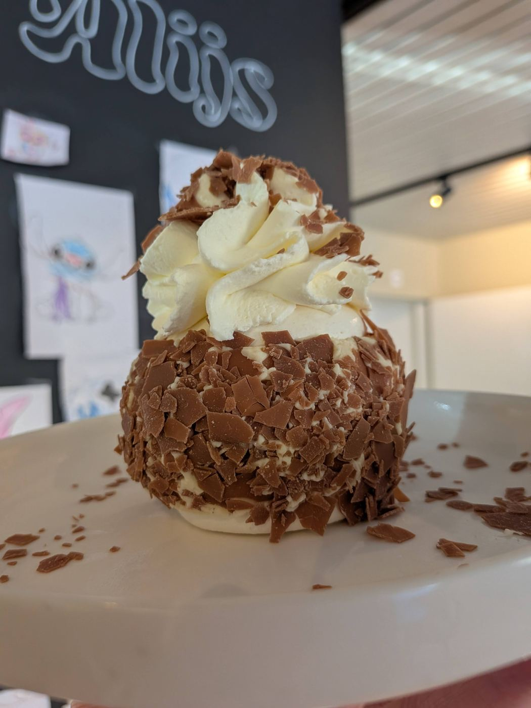
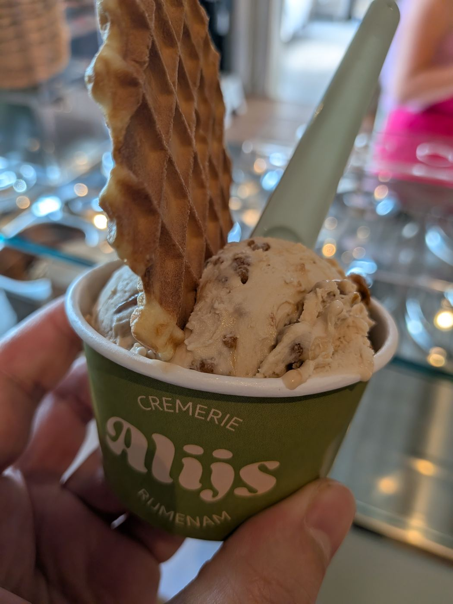
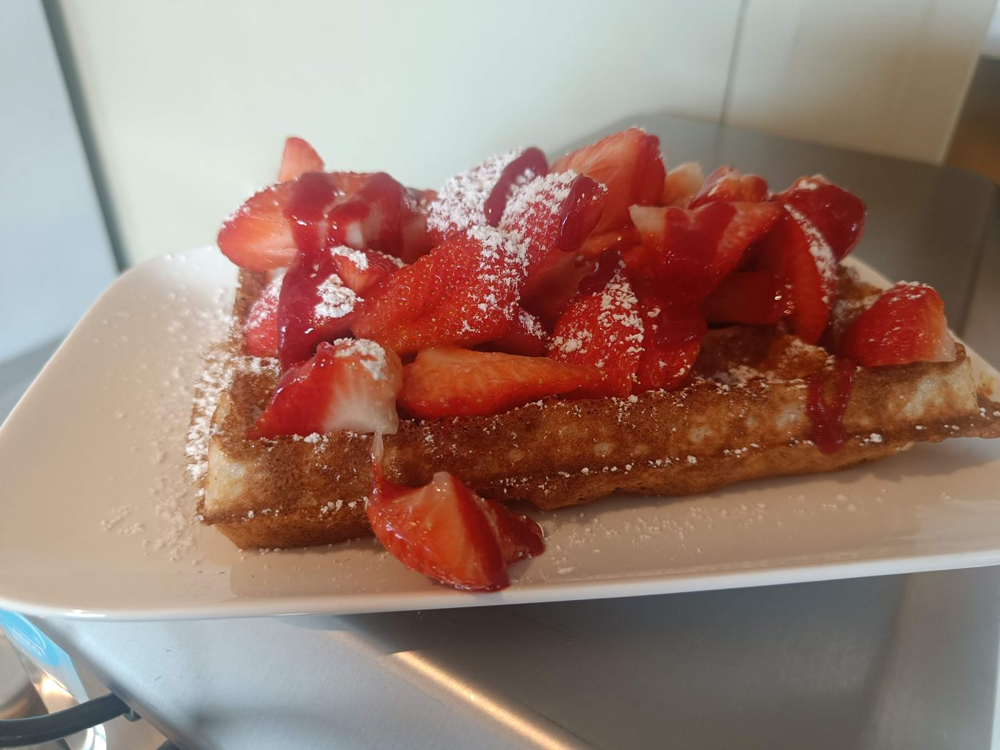
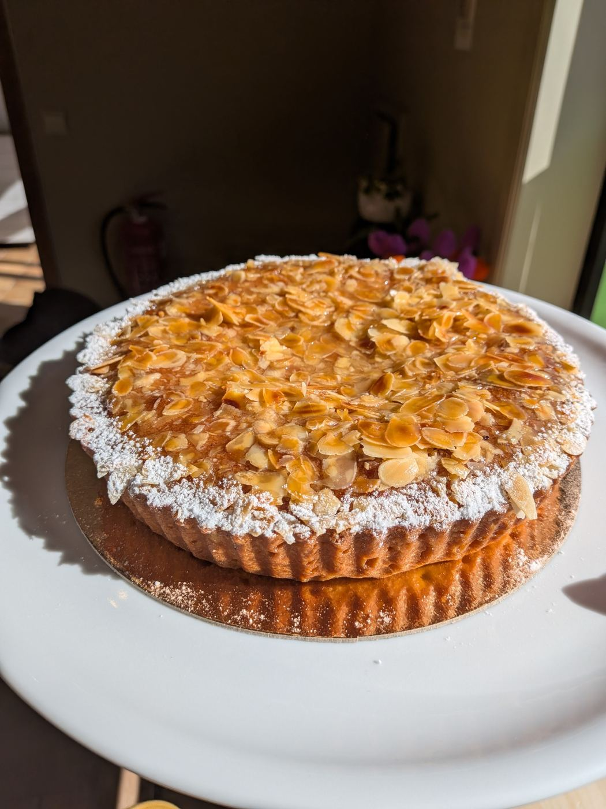
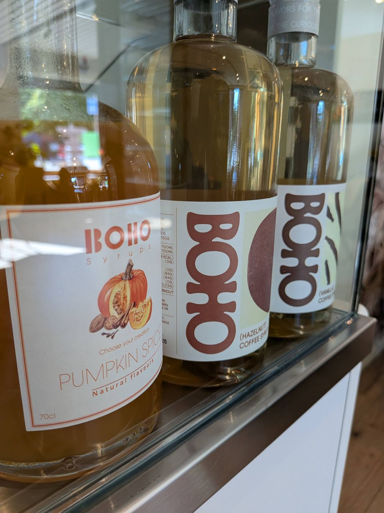

Coupes
Dame Blanche, Brésilienne, Banoffee of een Coupe Amarena. Onze klassiekers krijg je met drie bollen, minder mag ook.
Met melk van de boerderij om de hoek draaien we kleine batches ijs. Daarnaast bakken we wafels en pannenkoeken, en staat er altijd gebak klaar bij je koffie.

In de lente en zomer: framboos, bosvruchten en frisse limoen. De herfst brengt praliné, peer en karamel. En in de winter? Kruidige smaken en een glaasje glühwein.
Voor wie zin heeft in iets warms, iets zoets of allebei.

Dame Blanche, Brésilienne, Banoffee of een Coupe Amarena. Onze klassiekers krijg je met drie bollen, minder mag ook.

Luchtige Brusselse wafels en pannenkoeken, per twee en vers gebakken tot 18u. Met suiker, chocoladesaus of een bolletje ijs.

Elke dag gebak om bij je koffie te blijven hangen, of met een bolletje ijs erbij.

Van espresso tot chai latte, met een siroop naar keuze. Of een affogato: warme espresso over een bol vanille.
Op de menukaart vind je alle bolletjes, coupes, wafels en drankjes.